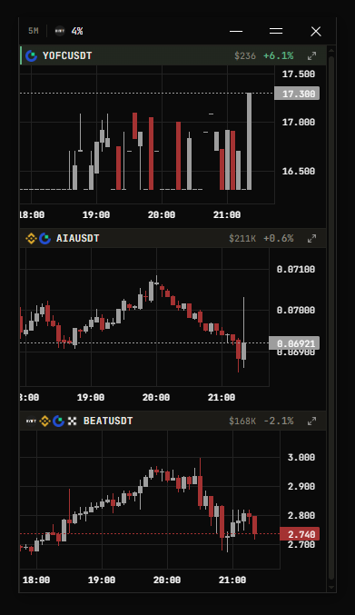
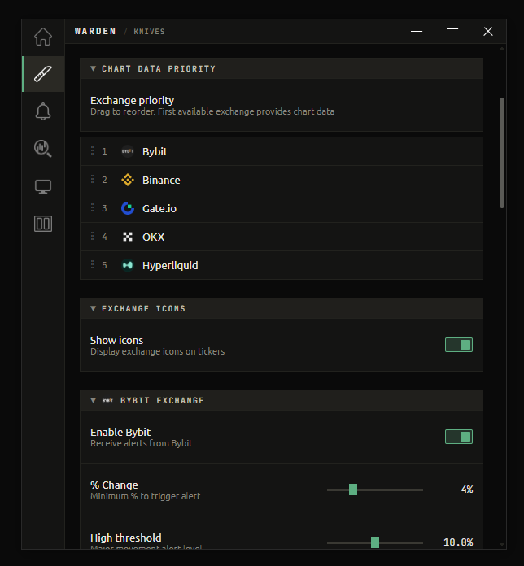
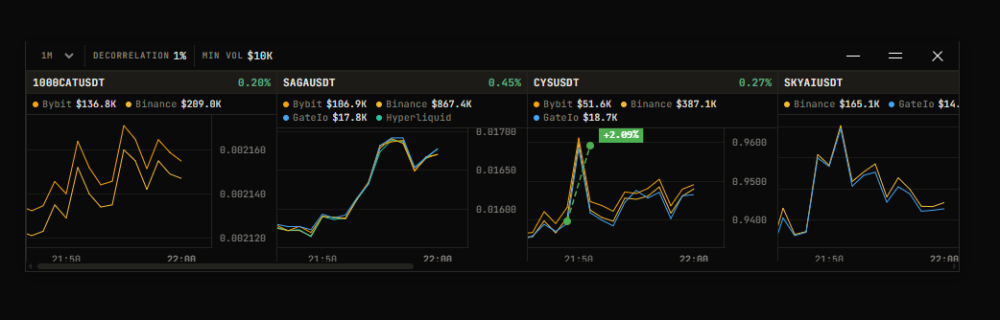
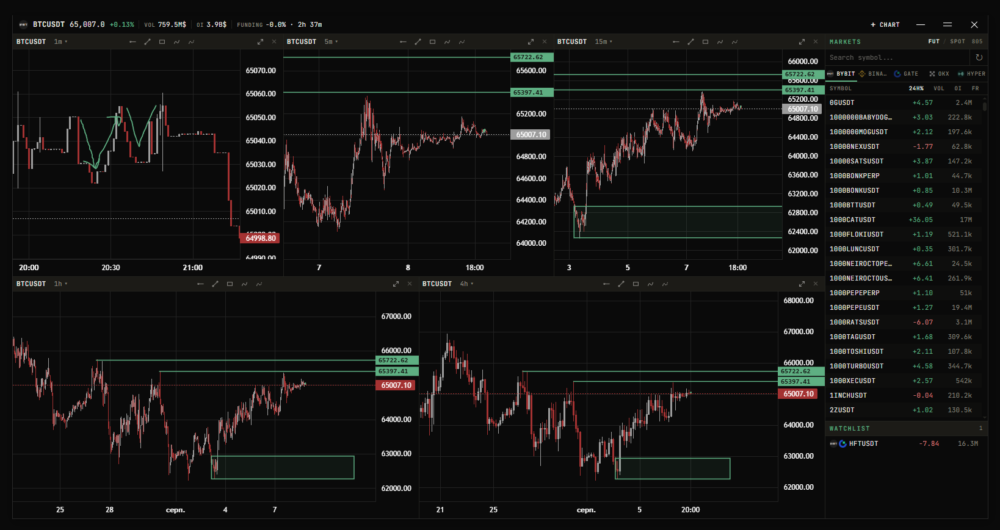
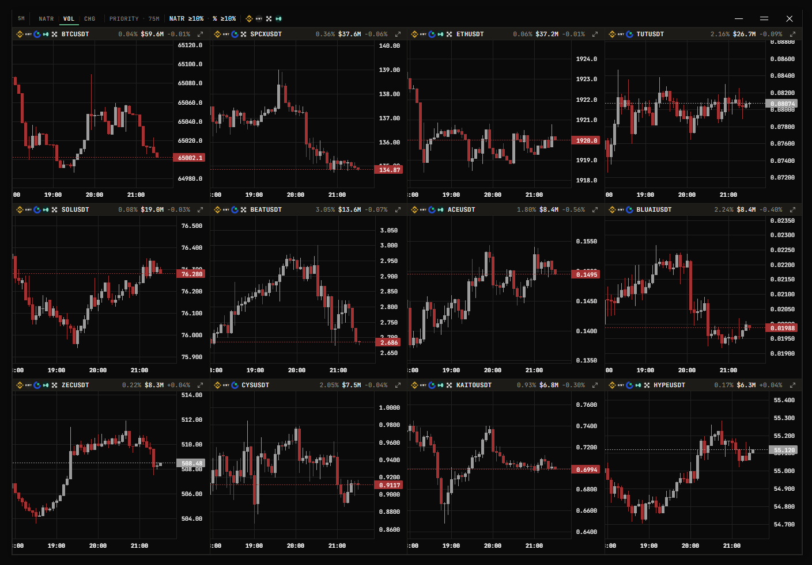
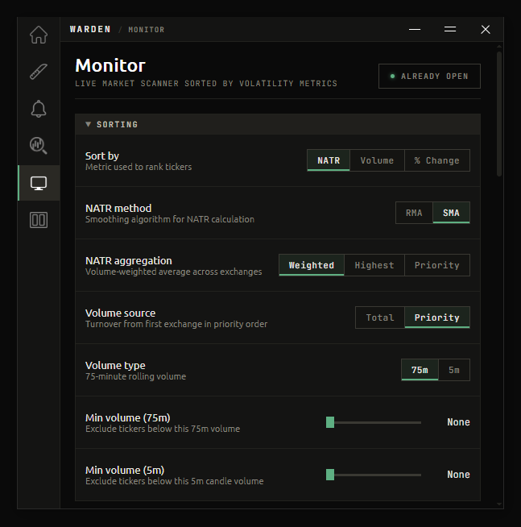
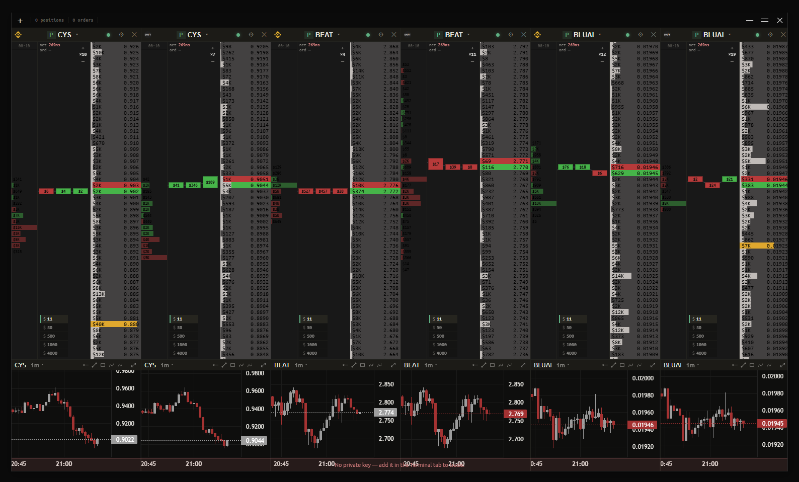
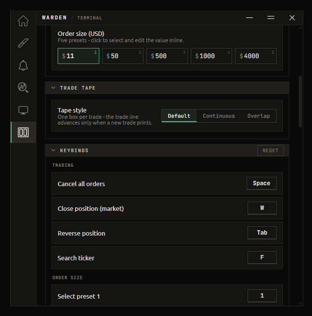

Beta — Free Access
WARDEN
Know the second the market moves.

 + more to come
+ more to come
All five at once, in one window
Know the second the market moves.
+ more to come
All five at once, in one window
Tools
Each tool opens in its own window and is configured on its own terms. No bloat, no noise — just the data you need, arranged the way you want it.
Never miss a move again.
Warden watches every ticker on five exchanges and surfaces the ones that just moved — on the 5-minute candle, as it happens.


Spot the gap before it closes.
The same coin rarely costs the same everywhere. Alerts catches the split the moment it opens — and tells you when something new starts trading.

Every timeframe at once.
One ticker, up to eight charts, on whichever exchange you actually trade. No tab switching, no context lost.

The whole market, ranked by what's moving.
A live leaderboard of volatility. Rank every ticker by NATR, volume or percent change, aggregated across all five exchanges.


Trade from the order book.


This one is a proof of concept and it can be buggy. It is off by default, entirely opt-in, and needs trade-only keys — never withdrawal access. Every other tool in Warden works without any keys at all.
Read the docs first →FAQ
When you first download and run Warden, Windows Defender SmartScreen may show a warning saying the app is unrecognized. This is completely normal and expected — here's why:
Windows SmartScreen flags any new application that hasn't yet built up a reputation with Microsoft. It is not a virus detection — it simply means not enough people have downloaded the file yet for Microsoft to automatically trust it. Every new indie app goes through this. As Warden gains more downloads, this warning will disappear on its own.
Ready to try it?
Join for news and to share your feedback
Updates, feature requests and direct contact
Telegram